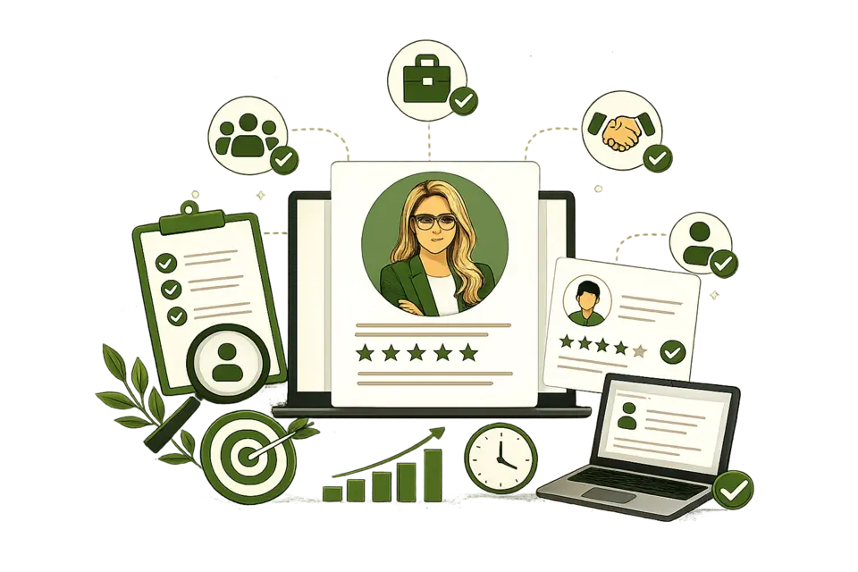

Gestão Empresarial
Apoio à organização da gestão, das rotinas e das responsabilidades internas.
O trabalho busca tornar a administração mais clara, acompanhável e alinhada às prioridades da empresa.
Quero saber maisA Control Consultoria Empresarial apoia empresas na organização da gestão, no desenvolvimento de equipes e na estruturação de processos que tornam a rotina mais clara, organizada e preparada para evoluir.
Cada projeto parte da realidade do negócio para construir soluções aplicáveis, consistentes e alinhadas aos seus objetivos.

A Control Consultoria Empresarial nasceu com o propósito de apoiar empresas que precisam organizar sua gestão, aprimorar processos e desenvolver pessoas de maneira estruturada.
Nossa atuação parte de uma compreensão ampla do negócio. Antes de propor qualquer solução, buscamos entender o contexto da empresa, seus desafios, sua estrutura, suas prioridades e os resultados que pretende alcançar.
A partir desse diagnóstico, construímos caminhos personalizados que conectam planejamento e execução.
Mais do que apresentar recomendações, buscamos tornar a gestão mais compreensível, organizada e possível de acompanhar no dia a dia.
A Control ajuda empresas a compreender melhor sua realidade, organizar prioridades e desenvolver estratégias, pessoas e processos de forma integrada.
Apoio à organização da gestão, das rotinas e das responsabilidades internas.
O trabalho busca tornar a administração mais clara, acompanhável e alinhada às prioridades da empresa.
Quero saber maisAnálise do contexto do negócio para apoiar decisões, prioridades e caminhos de evolução.
A consultoria conecta diagnóstico, planejamento e execução de forma aplicável à realidade da empresa.
Quero saber maisEstruturação de práticas que apoiam papéis, comunicação, acompanhamento e desenvolvimento das equipes.
O foco está em alinhar pessoas à rotina da empresa com clareza, responsabilidade e direção.
Quero saber maisCondução de processos estruturados para apoiar a escolha de profissionais alinhados à função e à cultura da empresa.
A atuação considera perfil, responsabilidades, contexto da vaga e necessidades reais do negócio.
Quero saber maisTreinamentos construídos conforme o perfil da equipe, os desafios atuais e os objetivos da empresa.
As ações buscam desenvolver competências aplicáveis ao dia a dia e à evolução da gestão.
Quero saber maisDefinição de prioridades, objetivos, indicadores e ações para orientar a tomada de decisões.
O planejamento é construído de forma coerente com o momento, a estrutura e as possibilidades da empresa.
Quero saber maisMapeamento, análise e organização de fluxos de trabalho para reduzir ruídos e melhorar a rotina.
A estruturação de processos apoia clareza, continuidade e acompanhamento das atividades.
Quero saber maisDesenvolvimento de competências para liderar equipes com clareza, responsabilidade e direção.
O trabalho apoia lideranças na comunicação, no acompanhamento e na condução das pessoas no dia a dia.
Quero saber maisOutras possibilidades de atuação: desenvolvimento organizacional, organização administrativa, estruturação de rotinas, mapeamento de processos, definição de responsabilidades, apoio à gestão, desenvolvimento de equipes, estruturação de práticas internas e análise e melhoria de fluxos de trabalho.
Converse sobre sua necessidadeCada projeto parte da realidade do negócio para construir soluções aplicáveis, consistentes e alinhadas aos seus objetivos.
Fale com a ControlA Control ajuda empresas a compreender melhor sua realidade, organizar prioridades e desenvolver estratégias, pessoas e processos de forma integrada.
A marca não precisa prometer resultados extraordinários ou utilizar discursos exagerados.
Sua autoridade deve ser construída por meio de clareza, método, proximidade, organização e conhecimento de gestão.
A autoridade da marca deve ser construída através de clareza, método, proximidade, organização e conhecimento de gestão.
Proximidade, escuta e orientação durante todas as etapas do trabalho.
Antes de propor qualquer solução, buscamos entender o contexto da empresa, seus desafios, sua estrutura, suas prioridades e os resultados que pretende alcançar.
Estratégia, pessoas, processos e gestão tratados como partes conectadas da mesma realidade empresarial.
Cada projeto parte da realidade do negócio para construir soluções aplicáveis, consistentes e alinhadas aos seus objetivos.
Buscamos tornar a gestão mais compreensível, organizada e possível de acompanhar no dia a dia.
A partir do diagnóstico, construímos caminhos personalizados que conectam planejamento e execução.
Cada etapa foi pensada para conectar análise, organização e aplicação prática.
Entendemos o cenário atual, as necessidades, a estrutura, os desafios e os objetivos da empresa antes de propor qualquer solução.
Definimos prioridades, ações, responsabilidades e direcionamentos coerentes com a realidade e as possibilidades da empresa.
Apoiamos a aplicação das soluções no dia a dia, conectando orientação, rotina e execução de forma acompanhável.
Acompanhamos avanços, observamos ajustes necessários e apoiamos a continuidade do trabalho com clareza e método.
Apoiar empresas na organização da gestão, no desenvolvimento de equipes e na estruturação de processos que tornam a rotina mais clara, organizada e preparada para evoluir.
Ser reconhecida pela atuação consultiva, personalizada e integrada em estratégia, pessoas, processos e gestão.
Ética, compromisso, parceria, clareza, eficiência e desenvolvimento.
Uma reflexão sobre como organizar prioridades, definir responsabilidades e transformar decisões em ações mais claras para a rotina da empresa.
Saiba maisUma análise sobre como liderança, comunicação e acompanhamento contribuem para o desenvolvimento das pessoas e para uma gestão mais consciente.
Saiba maisUma abordagem sobre como fluxos bem definidos, responsabilidades claras e práticas simples podem apoiar a organização do trabalho.
Saiba maisInformações sobre o atendimento e a forma de trabalho da Control.
Entre em contato pelo WhatsApp, por e-mail ou pelo formulário. A conversa inicial ajuda a compreender o cenário da empresa e identificar a solução mais adequada.
Empresas de diferentes segmentos e portes que precisam organizar sua gestão, aprimorar processos e desenvolver pessoas de maneira estruturada.
Não. Cada projeto parte da realidade do negócio para construir soluções aplicáveis, consistentes e alinhadas aos seus objetivos.
Sim. Os treinamentos são construídos conforme o perfil da equipe, os desafios atuais e os objetivos da empresa.
O acompanhamento depende da solução contratada e pode incluir alinhamentos periódicos, análise de avanços e ajustes necessários ao longo do trabalho.
Sim. O escopo é definido conforme a estrutura, as prioridades e o momento de cada empresa.
Sim. A contratação pode ser direcionada a uma necessidade específica ou estruturada em um projeto mais amplo, conforme o diagnóstico realizado.
O atendimento empresarial ocorre mediante contato e pode ser alinhado conforme a necessidade, a localização e o formato mais adequado ao projeto.
O orçamento é elaborado após a compreensão da necessidade, do escopo, da complexidade e das etapas envolvidas no trabalho.
Sim. A conversa inicial existe justamente para compreender o cenário, organizar prioridades e identificar o caminho mais adequado.
Atendimento empresarial mediante contato.
O primeiro passo é compreender o cenário, definir prioridades e construir um caminho possível.
A Control pode apoiar sua empresa nesse processo.